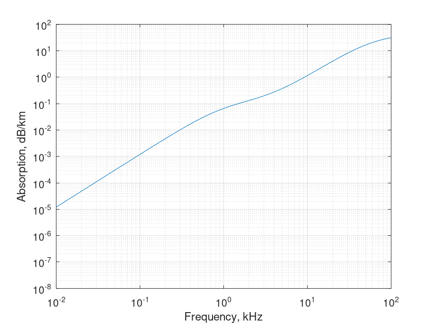

Sound absorption in sea. Thorp equation
Mathematical definition
$$\boxed{\alpha \left( f \right) = {\frac{{0.1{f^2}}}{{1 + {f^2}}} + \frac{{40{f^2}}}{{4100 + {f^2}}}}}$$
| Notation | Description | Conversion | Units | Limits |
|---|---|---|---|---|
| $\alpha$ | absorption | $\times 1.0936$ | $dB/km$ | |
| $f$ | frequency | $kHz$ | $f < 50$ |
Octave/Matlab implementation
function alpha = sound_absorption_sea_thorp(f)
% Arguments
% f: frequency \ kHz
% Results
% alpha: absorption of sound in seawater \ dB/km
alpha = 1.0936*(0.1*(f.^2)./(1+f.^2) ...
+ 40*(f.^2)./(4100+f.^2));
end
Computational examples

| $0.01\ \text{кГц}$ | $0.10\ \text{кГц}$ | $1.00\ \text{кГц}$ | $10.00\ \text{кГц}$ | $100.00\ \text{кГц}$ |
|---|---|---|---|---|
| $1.200E-05$ | $1.189E-03$ | $6.535E-02$ | $1.150E+00$ | $3.113E+01$ |
References
- Thorp, William H, "Analytic description of the low‐frequency attenuation coefficient", 1967
- Etter, Paul C, "Underwater acoustic modeling and simulation", 2018